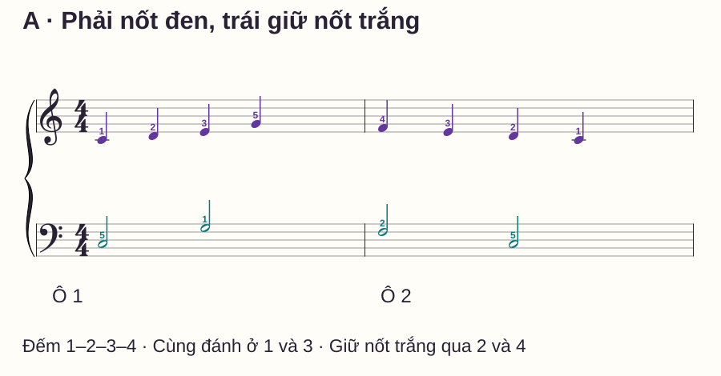
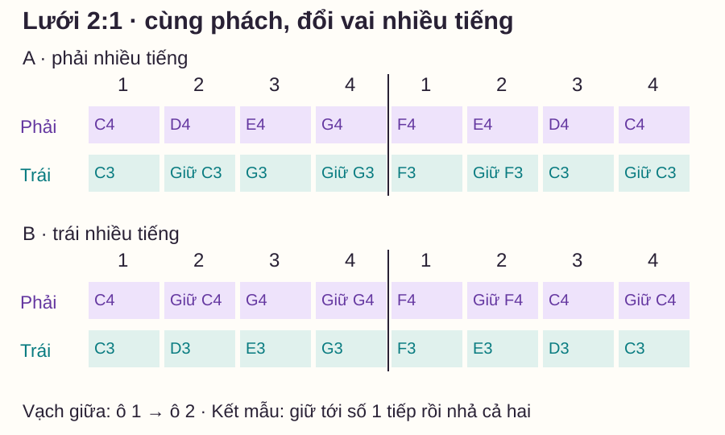
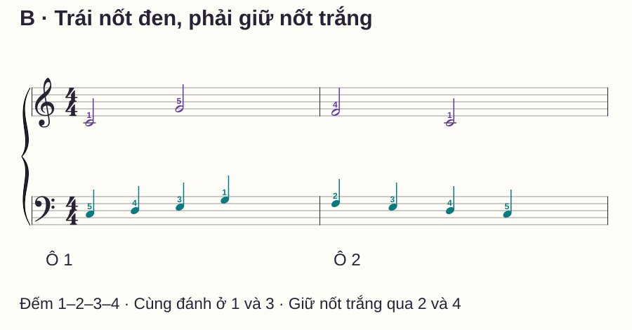

Phối hợp hai tay
Hai tay piano khác nhịp 2:1: cách đếm, giữ và đổi vai
# Hai tay piano khác nhịp 2:1: cách đếm, giữ và đổi vai
Tay phải chơi được bốn nốt, tay trái chỉ có hai nốt, nhưng khi ghép bạn lại đánh tay trái theo từng tiếng bên phải. Hoặc bạn cố giữ tay trái, rồi tay phải cũng ngừng ở phách tiếp theo. Chỗ cần làm rõ là thời điểm nào cả hai đánh, thời điểm nào một tay đánh còn tay kia tiếp tục giữ.
Bài này dùng nốt đen và nốt trắng trong nhịp 4/4 để luyện quan hệ hai tiếng đều đối với một tiếng dài. Bạn có hai mẫu hai ô nhịp, một lưới đối chiếu và phép đổi vai. Mục tiêu là giữ cùng dòng thời gian khi vai nhiều tiếng chuyển từ phải sang trái, thay vì chỉ lặp một ô đã quen.
Trả lời nhanh
Với mẫu 2:1 ở đây, hai tay dùng chung phách: tay nhiều tiếng đánh bốn nốt đen mỗi ô, tay còn lại đánh hai nốt trắng, mỗi nốt giữ hai phách. Đếm 1–2–3–4; cả hai đánh ở 1 và 3, chỉ tay nốt đen đánh ở 2 và 4. Tay nốt trắng vẫn giữ phím qua những phách ấy. Tập gõ điểm bắt đầu trước, rồi thử một cặp phách trên đàn ở tốc độ kiểm soát được. Khi nối hai ô, tiếp tục đếm qua vạch nhịp, không thêm một khoảng dừng. Sau khi mẫu đầu ổn, đổi vai để tay trái chơi phần nhiều tiếng.
“Khác nhịp” ở đây có nghĩa gì?
Cách gọi tìm kiếm “hai tay khác nhịp” thường nói tới việc hai tay không đánh mọi tiếng cùng lúc. Trong bài này, hai tay vẫn ở cùng nhịp 4/4 và cùng tempo, nhưng có tiết tấu khác nhau. Tỉ lệ 2:1 nghĩa là hai nốt ngắn đều chiếm cùng khoảng thời gian với một nốt dài; không có nghĩa là mỗi tay tự chạy một tốc độ tùy ý.
Nốt đen có đầu tô và thân nốt; trong mẫu 4/4 này nó dài một phách. Nốt trắng có đầu rỗng và thân nốt, dài hai phách. Quan hệ gấp đôi giữa các giá trị nốt được trình bày trong OpenLearn — Time values. Các sheet dưới là ví dụ do website tự biên soạn.
Bạn có thể gặp tỉ lệ 2:1 với móc đơn và nốt đen trong bản khác. Bài này chọn đen/trắng để không cần chia mỗi phách thành “1 và”; chưa luyện 3:2 hoặc đảo phách.
Chuẩn bị vùng đàn và số ngón
C = Đô, D Rê, E Mi, F Fa, G Sol. C4 là Đô giữa; C3 là Đô thấp hơn C4 một quãng tám. Tìm Đô ở bên trái nhóm hai phím đen, rồi kiểm đúng vùng. Một số đàn số đánh số quãng tám khác; đối chiếu Đô giữa thực tế nếu nhãn không giống bài.
Tay phải dùng vùng C4–G4, tay trái dùng C3–G3. Ngón 1 cái, 2 trỏ, 3 giữa, 4 áp út, 5 út. Với các mẫu này, phải C–D–E–F–G dùng 1–2–3–4–5; trái C–D–E–F–G dùng 5–4–3–2–1. Đó là ngón cho vùng năm phím đang dùng, không phải một ngón cố định cho mỗi tên nốt trong mọi bản nhạc.
Tập không pedal. Đặt tay thoải mái, không ghì cổ tay để giữ nốt trắng. Nếu chưa nhớ vị trí, gọi tên và tìm riêng từng phím trước khi thêm nhịp; bài không yêu cầu chơi nhanh ngay.
Bài tập A: tay phải bốn tiếng, tay trái hai tiếng

| Tay | Ô 1 | Ô 2 |
|---|---|---|
| Phải · nốt đen | C4–D4–E4–G4, ngón 1–2–3–5 | F4–E4–D4–C4, ngón 4–3–2–1 |
| Trái · nốt trắng | C3–G3, ngón 5–1 | F3–C3, ngón 2–5 |
Đếm mỗi ô 1–2–3–4. Phải đổi nốt ở cả bốn phách. Trái đánh nốt đầu ở 1, giữ qua 2; đổi sang nốt thứ hai ở 3, giữ qua 4. Ở số 1 ô 2, cả hai đổi sang F4/F3, không nghỉ thêm giữa hai ô.
Kết thúc mẫu ở cuối ô 2: C4 phải bắt đầu tại phách 4 và C3 trái bắt đầu tại phách 3. Giữ đủ đến số 1 tưởng tượng của ô 3 rồi nhả cả hai. Đừng nhả nốt trắng ngay khi miệng vừa đọc “4”.
Từng bước ghép theo cùng một dòng thời gian
1. Gõ điểm bắt đầu trước khi đàn
Chưa dùng cao độ: đếm 1–2–3–4, gõ cả hai tay ở 1 và 3; chỉ tay phải gõ ở 2 và 4. Làm hai ô liên tục rồi dừng, tối đa ba lượt có đặt lại. Tiếng gõ cho biết điểm bắt đầu; vì không ngân như đàn, nó chưa kiểm được bạn có giữ và nhả nốt trắng đúng hay không.
Trong hướng dẫn về độ chính xác tiết tấu của Yamaha, Diana Dumlavwalla phân biệt phách với tiết tấu và đề xuất hoạt động ngoài đàn để chuẩn bị cảm giác phách. Bài này dùng gõ như một bước giảm nhiệm vụ, không coi máy đếm nhịp hay một số lượt lặp là cách tự giải quyết mọi lỗi.
2. Kiểm từng tay ở cùng tempo thử
Có thể thử 50 phách/phút, một click cho mỗi nốt đen. Đếm một ô chuẩn bị trước khi vào. Chơi riêng mỗi tay một lượt; nếu chưa tìm kịp phím hoặc chưa giữ đủ, sửa một ô rồi chọn tốc độ thấp hơn. Không lấy tay phải nhanh và tay trái chậm làm bằng chứng đã sẵn sàng ở một tempo chung.
3. Ghép phách 1–2, rồi thêm 3–4
Ở ô 1: đánh C4/C3 cùng lúc ở 1; tới 2 chỉ phải đổi sang D4, trái vẫn giữ C3. Khi đếm tới 3, kết thúc đoạn hai phách bằng cách nhả cả hai nếu bạn đang tập riêng đoạn này. Sau đó đặt lại và thử đủ bốn phách: tại 3, phải sang E4 và trái sang G3, rồi tại 4 phải sang G4 còn trái giữ G3.
Đoạn cắt có điểm kết riêng để dễ kiểm. Khi chơi cả ô, phách 3 phải tiếp tục bằng nốt mới đúng sheet, không chèn việc dừng và đặt lại của lượt tập nhỏ.
4. Nối qua vạch ô nhịp
Lấy đoạn ô 1 phách 3–4 → ô 2 phách 1–2. Bắt đầu trực tiếp bằng E4/G3 ở phách 3, rồi đi tiếp G4/giữ G3 → F4/F3 → E4/giữ F3. Đếm “3–4–1–2” đều. Sau khi đoạn này rõ, quay lại chơi đủ hai ô, hai lượt có nghỉ đặt lại.
Lưới tám phách: đánh và giữ ở cả hai vai

Bạn có thể che sheet và giải thích lưới bằng lời. Nếu ở phách 2 A bạn nói “tay trái nghỉ”, hãy sửa thành “tay trái giữ C3”: im tiếng mới không có nghĩa là đã nhả phím. Trong các mẫu này không có dấu nghỉ hoặc dấu nối trường độ qua vạch nhịp.
Bài tập B: đổi vai, tay trái chơi phần nhiều tiếng

| Tay | Ô 1 | Ô 2 |
|---|---|---|
| Phải · nốt trắng | C4–G4, ngón 1–5 | F4–C4, ngón 4–1 |
| Trái · nốt đen | C3–D3–E3–G3, ngón 5–4–3–1 | F3–E3–D3–C3, ngón 2–3–4–5 |
Đặt lại tay, gõ điểm bắt đầu với vai mới trước. Sau đó kiểm riêng, ghép từng cặp phách và nối qua vạch nhịp như mẫu A. Dùng cùng tempo nếu kiểm soát được; nếu B khó hơn, giảm tempo thử cho B thay vì ép giữ tốc độ của A. Thử đủ hai ô hai lượt, giữ các nốt cuối tới số 1 của ô tiếp rồi nhả cùng.
Khi A và B riêng đều rõ, có thể thử A hai ô → B hai ô ở một tempo chung chậm hơn nếu cần. Ở đầu B, đánh lại C4/C3 dù cuối A cũng đang là hai phím đó; bản mẫu không có dấu nối. Vai nhiều tiếng bắt đầu chuyển sang trái từ phách 2 của ô đầu B. Nếu lẫn, quay về đặt lại giữa A/B trước, không cố đổi vai liên tục.
Bảng sửa lỗi theo điều bạn nghe và thấy
| Biểu hiện | Kiểm điều gì? | Cách sửa |
|---|---|---|
| Tay nốt trắng đánh cả ở 2 và 4 | Có đang bắt chước điểm đánh của tay kia? | Nói “giữ” trên lưới rồi tập riêng cặp 1–2 trên đàn |
| Nốt trắng nhả trước phách 2 hoặc 4 | Có coi hai số đếm là hai điểm nhả? | Đếm đến 3 mới đổi nốt đầu; nốt cuối giữ tới 1 tiếp |
| Sang ô 2 có khoảng chờ | Có tập mỗi ô như một đoạn đóng kín? | Luyện 3–4–1–2 rồi nối đủ câu, giữ tempo |
| A ổn nhưng B sai | Có mặc định tay phải luôn nhiều tiếng? | Gõ lại với vai đảo, sau đó kiểm riêng tay trái tại tempo B |
| Đúng nốt nhưng nhanh dần | Có đo bằng phách đều hay chỉ đếm theo tiếng đàn? | Ngừng chạy cả câu; gõ hai ô với phách tham chiếu rồi giảm nhiệm vụ |
Nếu một tay riêng vẫn sai nốt, sửa riêng nốt/ngón trước khi ghép lại. Nếu riêng đúng nhưng ghép sai, chọn đúng điểm phối hợp trên lưới. Bài tập từng tay có phép quyết định chi tiết cho hai trường hợp này.
Routine mười phút
- 0–2 phút: tìm vùng đàn, đọc đen/trắng và gõ điểm vào của A.
- 2–4 phút: kiểm riêng rồi ghép hai cặp phách của A.
- 4–6 phút: nối 3–4–1–2 rồi chơi đủ hai ô A.
- 6–8 phút: gõ đổi vai và thử B; chưa chắc thì chỉ một ô.
- 8–10 phút: làm phép tự kiểm dưới đây, ghi một lỗi và thử sửa lại.
Đây là khung phân bổ, không phải cam kết hoàn thành cả hai mẫu trong một buổi. Nếu phần A còn chưa rõ, dùng thời gian của B để sửa A; không tăng số nhiệm vụ chỉ để theo kịp đồng hồ.
Tự kiểm: biết giữ vai và bắt đầu giữa câu
- Chơi A đủ hai ô không thêm tiếng trái ở 2/4, không dừng tại vạch nhịp.
- Đặt lại, bắt đầu trực tiếp B từ ô 2: phải F4 trắng rồi C4 trắng; trái F3–E3–D3–C3 đen. Đếm một ô chuẩn bị trước khi vào.
- Trả lời trước khi mở đáp án: B ô 2 phách 4 tay nào đánh, tay nào giữ? Nhả hai nốt cuối vào lúc nào?
Mở đáp án thời điểm cuối mẫu B
Tại phách 4, tay trái đánh C3 ngón 5; tay phải tiếp tục giữ C4 ngón 1 từ phách 3. Đến số 1 tưởng tượng của ô tiếp, nhả cả C3 và C4 nếu kết thúc mẫu. Nếu nối lại B, đánh lại các nốt đầu đúng thời điểm đó, không giữ nối ngầm.
Bạn có thể mở rộng khi thực hiện được ba yêu cầu ở tempo đã chọn và lặp lại sau một khoảng nghỉ đặt lại. Đổi vai liên tục A→B là bước thêm, chưa phải điều kiện phải làm ngay. Mẫu đã thuộc không thay phép đọc sheet mới; đừng dùng kết quả này để suy ra đã chơi được mọi tiết tấu hai tay.
Đọc thêm theo vấn đề
Nếu hay nhả nốt dài theo tay kia, xem một tay giữ, một tay di chuyển. Nếu chưa rõ phách chung, xem phách và tiết tấu. Cách chơi piano hai tay đặt bài tập này trong quy trình phối hợp tổng quát; các liên kết chỉ là đọc thêm, mẫu luyện đã đầy đủ trên trang.
Câu hỏi thường gặp
Tay nốt trắng có phải chơi chậm hơn cả tempo không?
Không. Cả hai cùng tempo, nhưng tay nốt trắng tạo tiếng mới thưa hơn và giữ mỗi tiếng lâu hơn. Đừng giảm riêng tốc độ một tay trong khi đang ghép.
Có cần đếm “1 và 2 và” không?
Mẫu đen/trắng này có thể đếm 1–2–3–4. Cách chia nhỏ phách cần phù hợp giá trị nốt và mục tiêu; chưa cần thêm móc đơn khi bạn đang kiểm quan hệ hai phách với một phách.
Gõ đúng rồi mà đàn vẫn sai là vì sao?
Khi đàn, bạn thêm cao độ, ngón và thời gian giữ thực. Dùng lượt riêng để tìm phần mới gây khó, rồi ghép một cặp phách; gõ đúng chưa xác nhận giữ/nhả đúng.
Có được nhìn tay trái khi nó đổi nốt không?
Có thể nhìn để định vị trong lúc học. Sau đó thử lại với sheet/lưới để biết hành động của cả hai; không cần ép không nhìn tay hoặc nhắm mắt.
Tôi có cần tăng tempo sau mỗi buổi không?
Không. Chỉ thử tăng khi nốt, phách và giữ/nhả đều ổn, kể cả bắt đầu từ ô 2. Nếu tăng làm mất một tiêu chí, quay về mức kiểm soát được hoặc giảm đoạn.
Bài này có phải luyện đa tiết tấu 3:2 không?
Không. Đây là tỉ lệ 2:1 với các điểm bắt đầu nằm trên phách nốt đen. Quan hệ 3:2 cần chia thời gian khác và không được giải bằng việc lặp công thức 1–2–3–4 của mẫu này.
Nguồn và ghi chú biên soạn
- Open University — Time values: quan hệ độ dài các hình nốt.
- Yamaha — Fix It: Tips for Teaching Rhythmic Accuracy on the Piano, Diana Dumlavwalla: phân biệt phách/tiết tấu và vai trò hoạt động ngoài đàn. Nguồn được kiểm ngày 27/10/2026.
- Sheet, lưới, tempo thử, routine và tiêu chí là thiết kế thực hành riêng của website. Không sao chép hình/mẫu của nguồn; chưa có review giáo viên độc lập hoặc thử nghiệm người học.